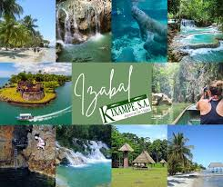
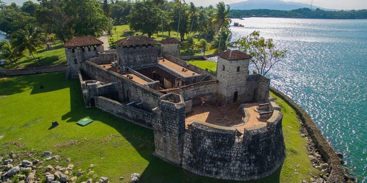

Río Dulce Izabal (Parque Nacional)
Navegar Río Dulce es comprender por qué Izabal enamora. El tramo protegido del parque nacional conecta el Lago de Izabal con el Caribe atravesando cañones cubiertos de selva y corredores de manglar donde el agua se vuelve espejo y el sonido baja de volumen por pura intuición. La lancha suele partir de Fronteras (Río Dulce pueblo) y, en pocas curvas, el paisaje se estrecha en paredes verdes salpicadas de muelles de madera, casitas lacustres y jardines flotantes. Con suerte, verás garzas, martines pescadores y la silueta tímida de un manatí. No es solo transporte: es el eje escénico que articula el departamento. Madrugar regala aguas lisas y luz dorada; al atardecer, el río se tiñe de cobre y la brisa afloja. Si puedes, añade paradas en manantiales y aguas termales del trayecto antes de asomarte al Caribe desde Livingston.

Castillo de San Felipe de Lara
El Castillo de San Felipe de Lara vigila, desde el siglo XVII, la boca del lago que se abre a Río Dulce. Subir por sus escaleras irregulares y asomarse por troneras es retroceder a una época en que piratas y corsarios eran amenaza real. El circuito revela pasadizos frescos, pequeñas celdas, patios de armas y torres que enmarcan el agua desde ángulos distintos. Desde lo alto, la geografía cobra sentido: el fortín protegía el estrechamiento natural de paso obligado para cualquier embarcación. Ve en mañana o última hora para que los muros ganen textura sin calor cenital y quédate un rato en el césped que mira al lago: ver cómo cambian los colores del agua es media visita.

Livingston y cultura garífuna
A Livingston solo se llega por agua, y ese detalle define su carácter. En el malecón, la brisa salada convive con tambores que suben desde los portales y con una paleta de colores que salpica fachadas y pañuelos. La cultura garífuna se vive en la mesa y en la música: el tapado (sopa de mariscos con coco) es tan imprescindible como escuchar percusión al caer la tarde. Pasear por el pueblo es mirar con respeto, preguntar sin prisas y comprender que, más que “destino turístico”, es comunidad viva con ritmos y ceremonias propios. Desde aquí organizas con facilidad la salida a Siete Altares y a Playa Blanca, ajustando la jornada al mar y al cielo. Y si quieres un mapa de sabores del país para seguir la ruta, aquí tienes un recurso útil: Platos típicos de Guatemala.

Siete Altares
La vereda hacia Siete Altares se interna en un bosque donde el agua talla escalones de piedra y crea una cadena de pozas transparentes. Cada “altar” tiene carácter: algunos invitan a flotar en calma; otros piden sentarse en los bordes para dejar que el agua corra por la espalda. La banda sonora la pone la selva: hojas, pájaros, algún insecto insistente y el rumor constante de la corriente. Tras lluvias, el verde explota y el suelo puede volverse resbaladizo; con cielos despejados, los rayos entran a ráfagas y el sitio se convierte en acuarela. Disfrútalo con tiempo para subir y bajar sin apuro, elige una poza menos concurrida y respeta los letreros que prohíben saltos en zonas someras: el encanto reside tanto en el baño como en la caminata que lo precede.

Playa Blanca
En Playa Blanca el Caribe de Izabal enseña su cara más amable: arena clara, palmeras generosas en sombra y un agua mansa que invita a quedarse horas. Se accede en lancha desde Livingston, añadiendo ese sabor de “excursión de día perfecto”. No es un resort, y ahí está su valor: tender una toalla, leer, alternar chapuzones y mirar cómo la línea de palmeras recorta el horizonte. Lleva efectivo para los kioscos, suficiente agua y bolsa para tus residuos. Si terminas el viaje con ganas de más costa, elige tu siguiente parada según vientos y temporada con esta guía práctica: mejores playas de Guatemala.